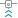

Orca Cloud
Login
Bambu Cloud
Not signed in
Login
Log Out
Recent
OrcaCloud
Wiki
New Project
Create new project
Open Project
3mf
New Calibration
Tune your printer
Recommended Test Order
Per filament
Temperature
When:
Corners blob or detail is stringy
Order:
First test for a new filament.
Max volumetric speed
When:
Parts are under-extruded or the nozzle clogs
Order:
After temperature.
Before changing flow speed.
Pressure advance
When:
After changing extruder, filament or temps
Order:
After temperature, before flow ratio.
Flow ratio
When:
For thin or inconsistent extrusion
Order:
After pressure advance.

Retraction
Optional
When:
Stringing issues
Order:
After pressure advance and flow ratio.
Per printer
Cornering
Optional
Advanced
When:
Corners look rounded or wavy.
You want to push print speed.
Order:
First of the advanced tests, after the filament tests.
Input shaping frequency
Optional
Advanced
When:
Once per printer
Use automatic input shaping instead if your printer supports it.
Order:
After the filament tests.
Input shaping damping
Optional
Advanced
When:
Ringing is still visible in prints
Order:
After the frequency is set.
VFA
Optional
Advanced
When:
Fast prints look rough on the surface
Order:
After input shaping.
Calibration guide
Recently opened
Clear all